Festival de Tours

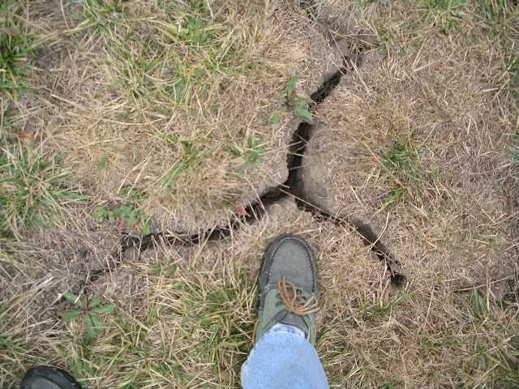
Pouh, quel festival : 200 photos j'ai pris, l'a fallu que j'en jette pas mal ! Bon, en arrivant, on voit que la terre a soif...

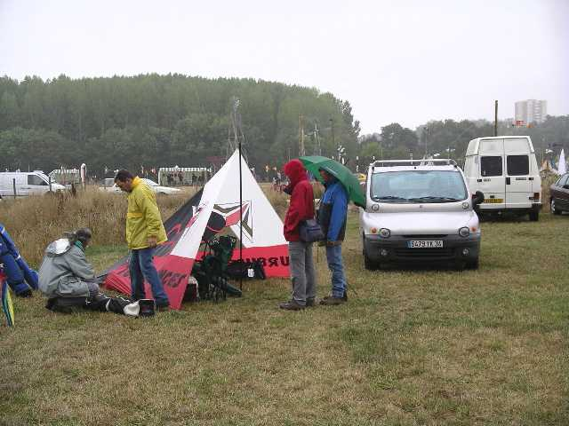
Mais pas d'inquiétude, avec ce qu'il tombe, ça devrait se reboucher assez vite ! Turbulences finit de monter sa tente sous parapluies et anoraks...

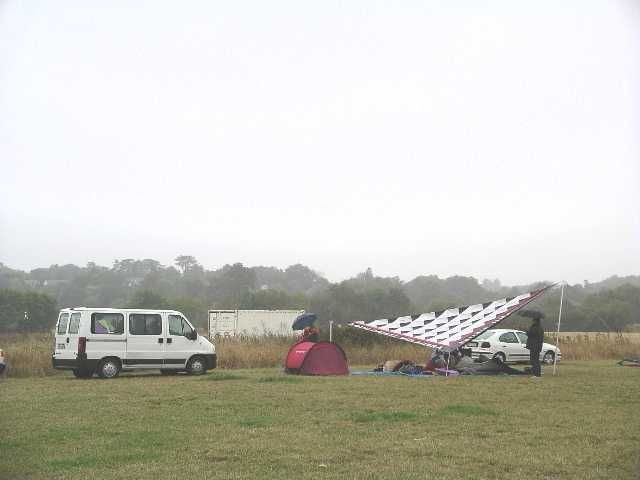
Et les italiens ont fini, mais leur velum ne m'a pas semblé très imperméable ni à l'abri des embruns ! Heureusement (pour ça...) le vent est pratiquement nul.

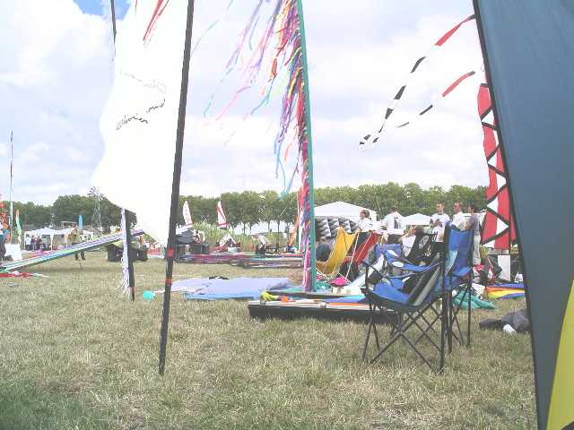
Mais enfin, petit à petit, ça se lève, le vent monte et les cervolistes plantent leurs guitounes pour tenir la journée...

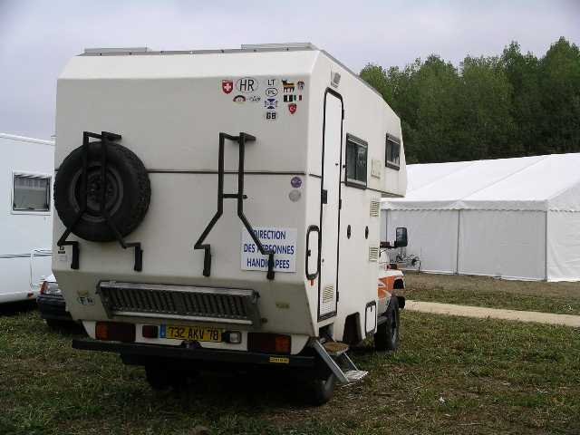
Les Mouchague ont un peu traîné, mais ont fini par arriver...

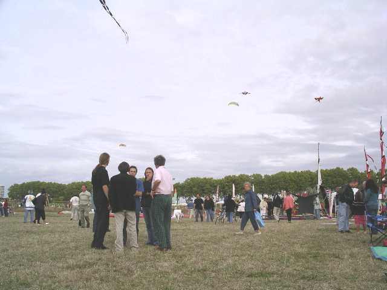
Le principe du festival est de mélanger le public et les cerfs-volistes ! C'est agréable, ça facilite les contacts, les questions se posent plus facilement et les discussions vont bon train.

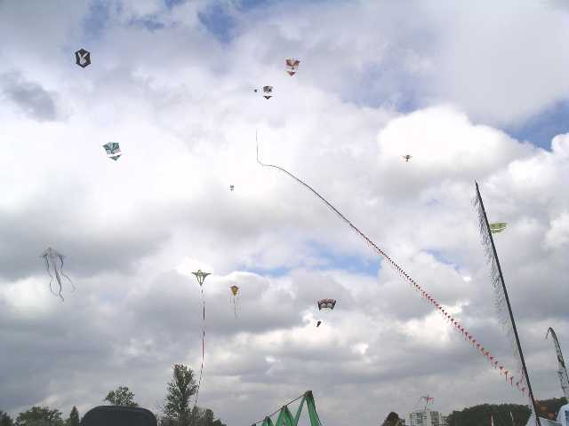
Finalement, le ciel se meuble bien, des légers au départ : beaucoup de rollers !

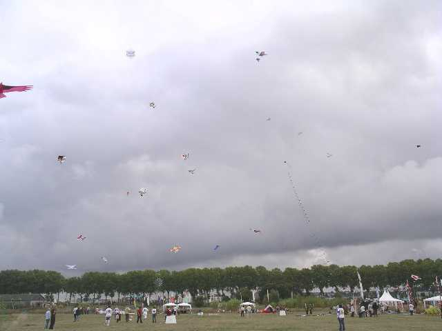
Et puis des plus gros, grands deltas, Condor...

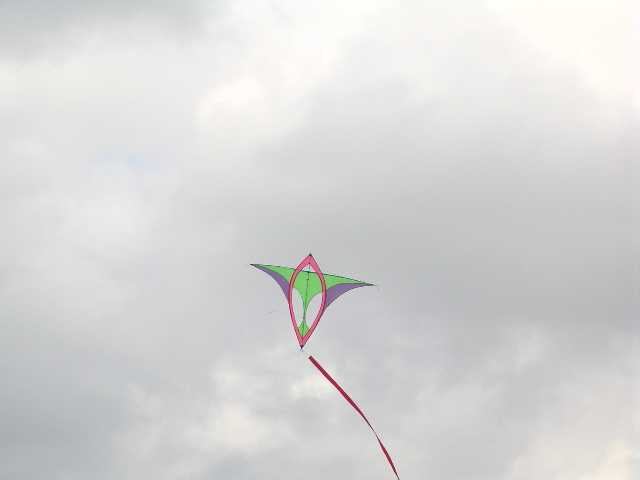
De jolis cerfs-volants que je ne connaissais pas comme cette "amande" où les courbes s'entrecroisent et se pénètrent...

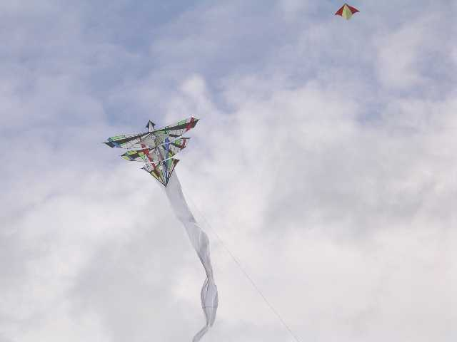
Le grand Annarlequin de Vierzon a réussi à prendre l'air, pourtant il fait son poids. Dans la journée, on verra aussi en l'air leur Flow-form géant...

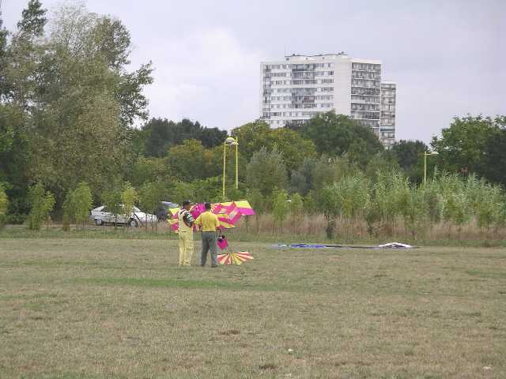
Claude s'intéresse aussi à un avion très coloré, qui ne volera pas tout de suite mais plus tard et je serai trop loin pour le photographier.

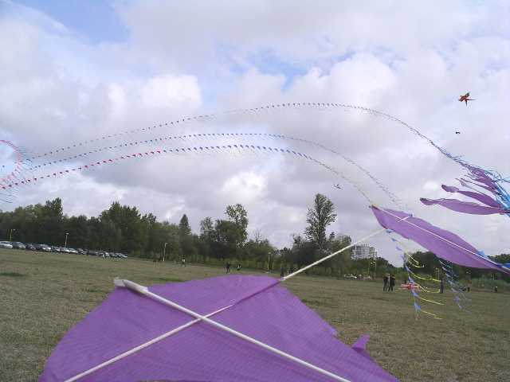
Les arches se multiplient, l'auteur a 2000 voilures à lancer mais manque de place, et pourtant !

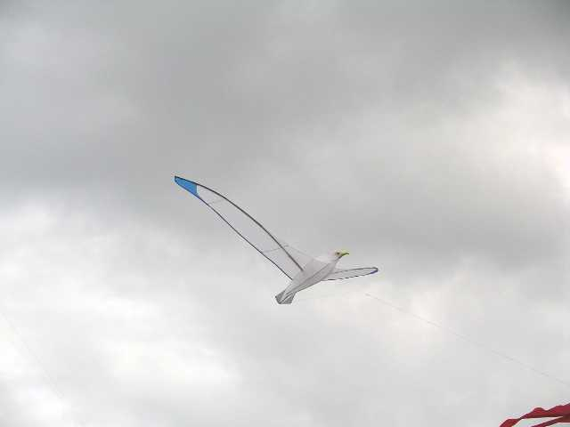
Moi, je ferai le 1er vol de mon nouveau cerf-volant, l'Albatros 2. Je voulais refaire la toile de l'ancien, mais je n'ai pas eu le courage de le détruire. Alors, j'en ai fait un autre, pas mal modifié... Il a assez bien volé, j'ai seulement noté une douzaine de modifications à faire, y a rien de plus instructif que les essais en vol...

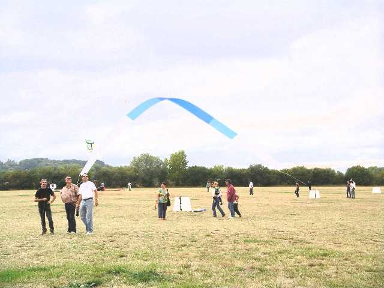
On verra aussi une "banderole" "voler".

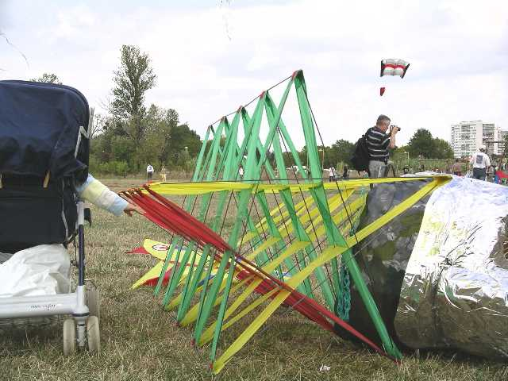
Posé à coté de la tête de son dragon, le cerf-volant en étoiles de Guillaume plaît beaucoup à Bébé !

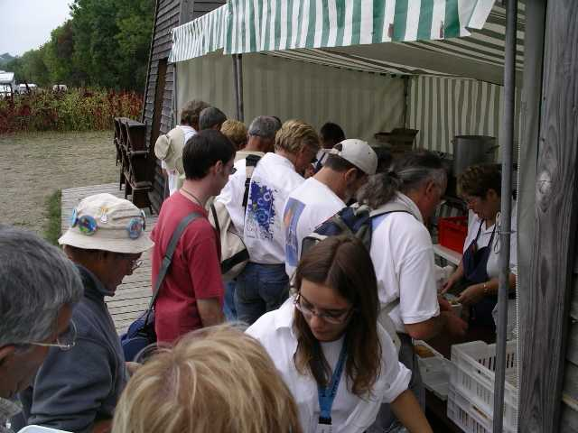
Mais midi est arrivé vite, vite, vite, il faut aller faire la queue en n'ayant pas oublié de prendre le ticket...

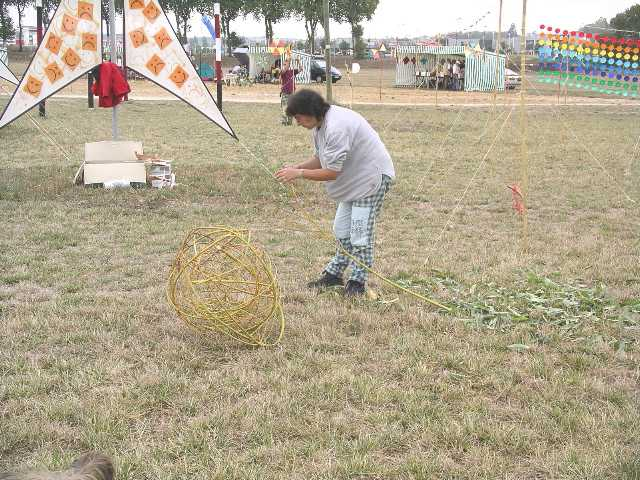
Côté Jardins du V... on se remue. Certains improvisent même avec les matériaux locaux, comme Mme Roberto avec cette sphère en osier...

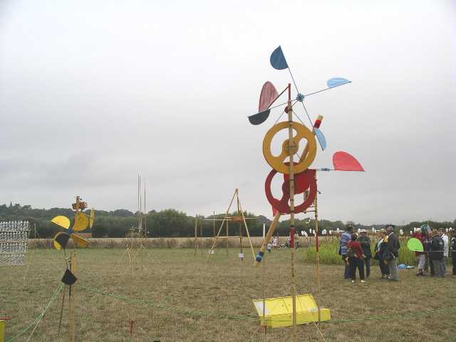
Michel Darnis et Louisette ont remonté leurs cacophones, un peu caco-aphones faute d'énergie motrice...

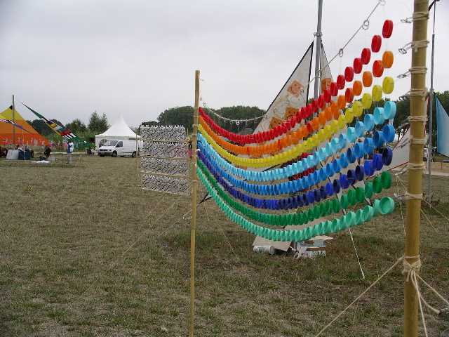
Ce voile coloré prend toute sa saveur quand on sait qu'il est constitué de bouchons de bouteilles de diverses couleurs "naturelles" !

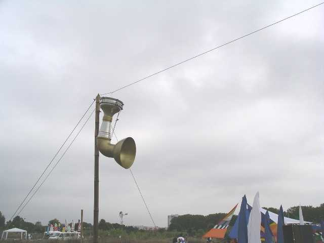
Didier a monté, outre des orgues et flûtes éoliennes, nombre de fils vibrants avec résonateurs...

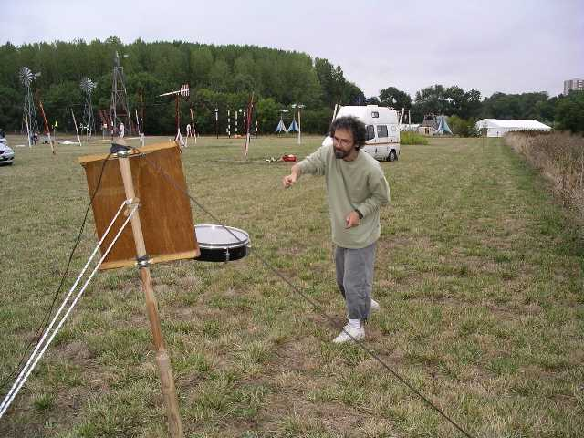
Il y a aussi un fil qui produit un très beau son, riche en harmonique et en modulations quand on le fait vibrer longitudinalement avec les doigts enduits de colophane...

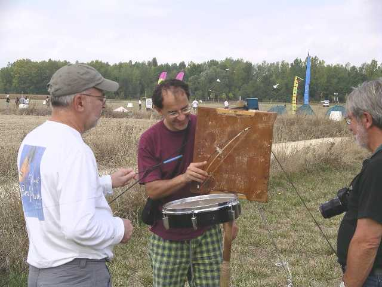
...ou bien en le frappant comme Patrick, ou encore en l'excitant avec un archet maison comme le fait Roberto !

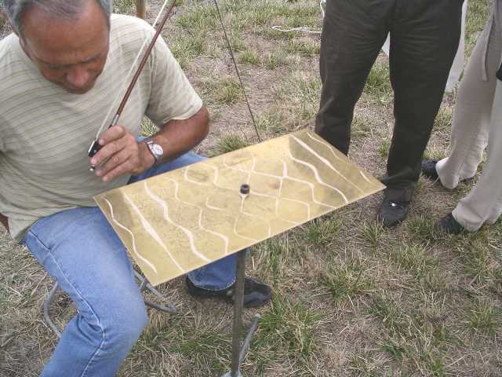
Toujours à l'archet, et malgré le petit vent qui balaie le sable, Joel arrive à obtenir des figures de plus en plus complexes !

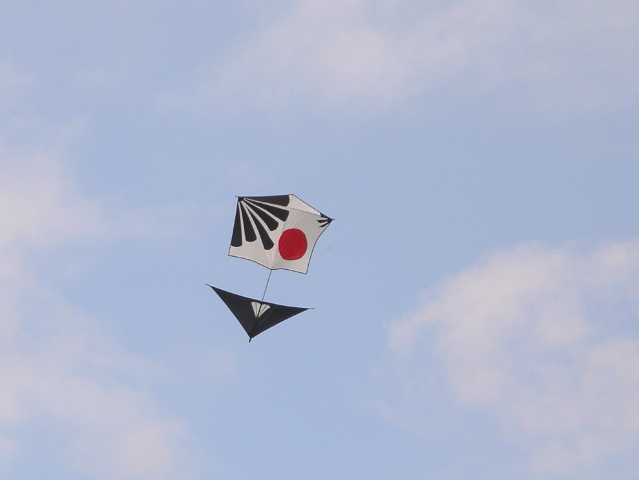
Les rollers, c'est leur jour ! Celui-ci est à Claude, je crois. Claude est d'ailleurs dans une forme olympique aujourd'hui, on ne peut plus le tenir !...

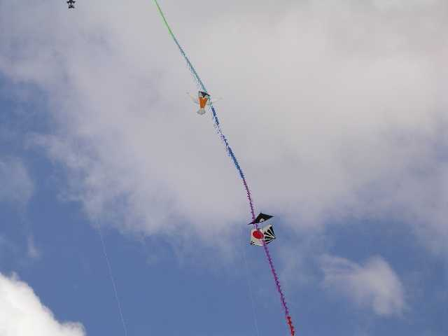
Tellement que... il vaudrait mieux contrôler un peu plus, ah, ces gamins !

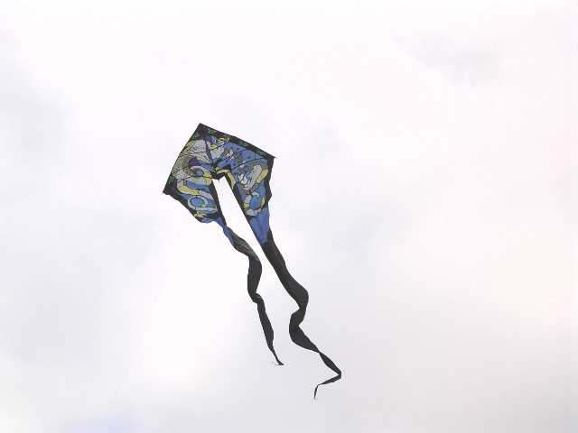
Je reviens sur mes déclarations "cerf-volant psychédélique". En fait, vu de face, on voit mieux, c'est normal. C'est une très belle interprétation d'une chimère à corps de dragon et buste nu de femme le tout issu d'un vitrail du Château d'Ecouen, du Château, hein, pas de la Collégiale !

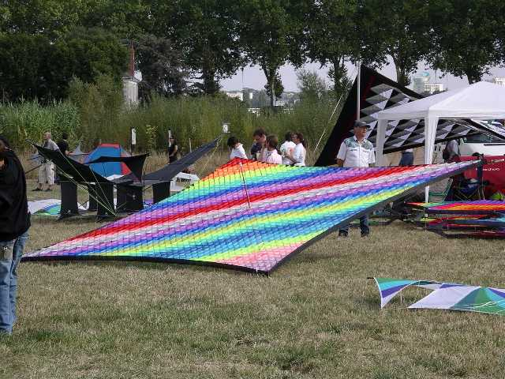
Les italiens sont venus en nombre. Ils ont réalisé des sortes de flocons très plats et très beaux, une merveille de couture. Accessoirement, ils volent, aussi, mais il faut un peu plus de vent...

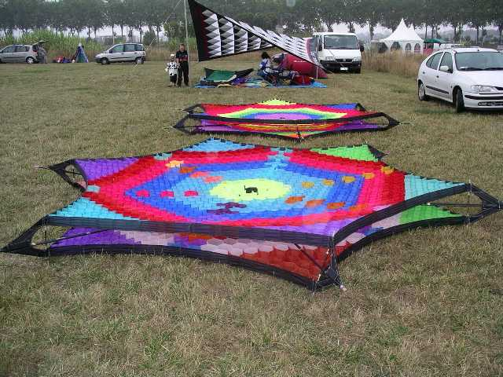
On voit mieux la construction sur ceux-ci, qui sont en outre à double épaisseur, une seule, c'était trop facile !

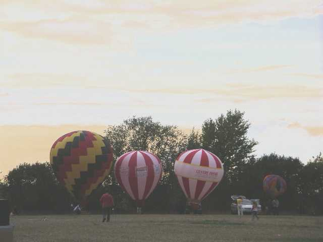
Mais le soir tombe, le vent avec, c'est l'heure où les mini-montgolfières vont se lâcher. Elles sont 4 dont une toute petite, mais avec le pilote assis sur son siège, s'il vous plaît...

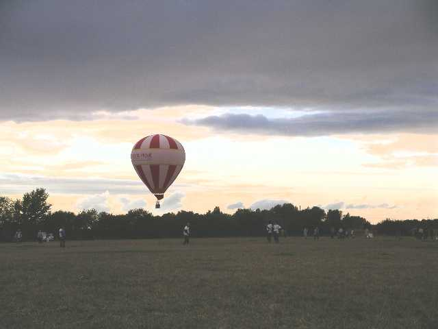
Elles sont télécommandées, et avec le vent faible, on peut les libérer sans qu'elles aillent trop loin... si on est prudent !

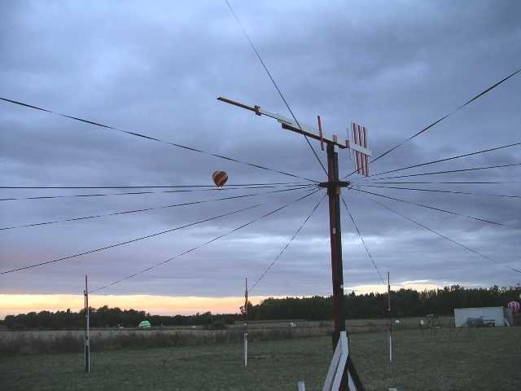
La plus grosse (à Michel ?) s'est même permis de monter assez haut en exploitant une accalmie...

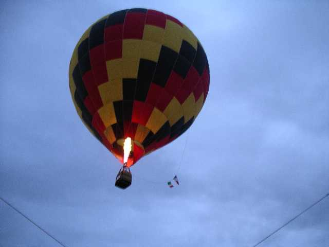
On peut aussi les tenir en laisse ce qui permet de les voir de près, toujours impressionnant dans la nuit, même à cette échelle !

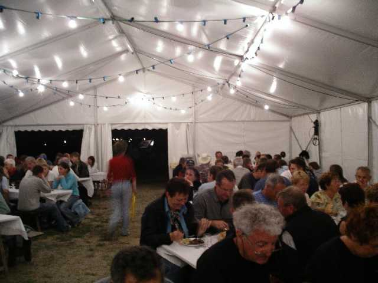
Puis c'est l'heure du dîner, servi à table sous la tente.

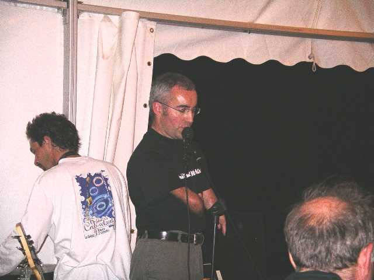
Après le dîner, surprise : de la musique, principalement par des cervolistes. D'abord, chant diphonique, où 2 voix sont émises simultanément (très prenant, avec notre ami)... en savoir plus

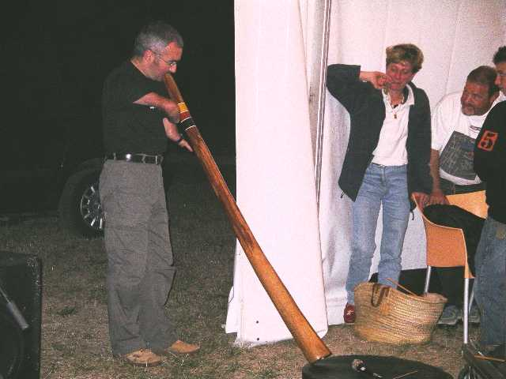
C'est aussi un pro du Didjeridoo, avec du rythme et des variations infinies !

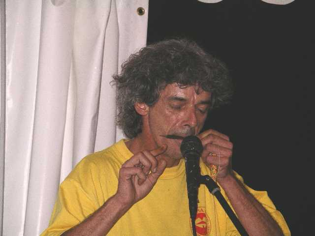
Dom nous régalera aussi d'un récital de guimbarde, d'abord sur des rythmes lents et profonds pour montrer que cet instrument n'est pas qu'un jouet. Il terminera quand même sur un morceau endiablé, pour montrer qu'il maîtrise...

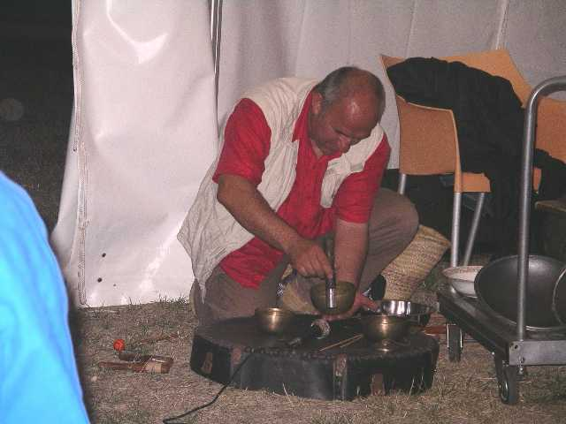
Bernard pratiquera, seul ou en accompagnement, les "bols tibétains", sons choqués ou frottements comme sur la photo qui résonnent longtemps en créant une atmosphère...

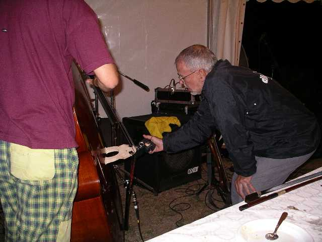
Puis l'orchestre se met en place, Patrick en profite pour faire de la contre-plongée sur Roberto à la contrebasse grâce à son appareil "vrillable" !

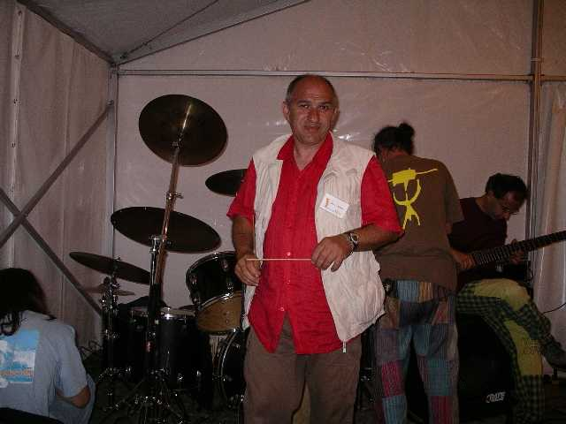
Pour l'installation de l'orchestre, bernard mène son monde à la baguette !

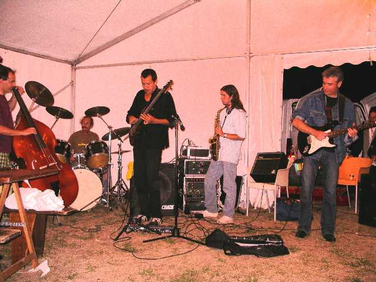
Finalement, l'orchestre est installé et joue. Sur les 5, il y a 3 cervolistes, pas mal...

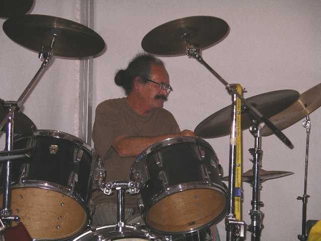
D'abord le batteur que vous aurez bien sûr reconnu : Guy Gosselin qui allie tous les talents, et il s'est bien défendu !

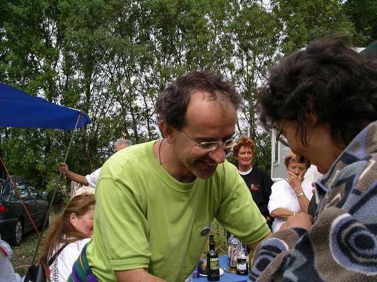
Ensuite, Roberto, un cervoliste italien à la contrebasse a été le meilleur...

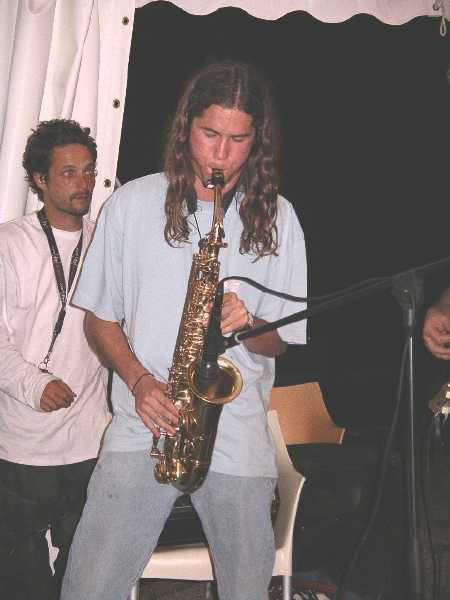
Et puis David, le fils de Didier Ferment au saxo a eu un peu de mal à plonger dans le groupe des musiciens pro ou quasi-pro, mais il s'est amélioré tout au long de la soirée...

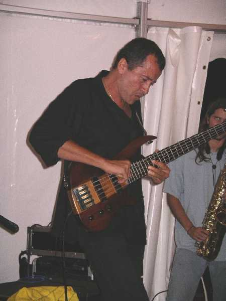
Puis une basse électrique (photo) et une gratte, je les connaissais pas, mais ils se sont donnés, fallait voir et entendre !

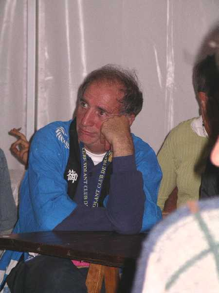
Les cervolistes, ceux du public, sont restés babas toute la soirée, jusque vers minuit et demie !

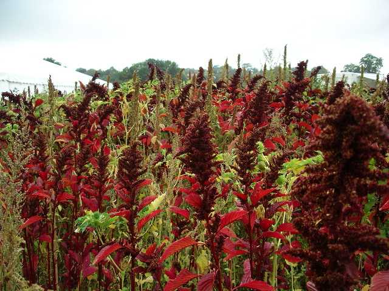
Le dimanche matin, réveil un peu difficile, et sous une pluie pas encourageante. Alors, après le somptueux petit-déjeuner, visite des jardins avec des plantes plus ou moins connues...

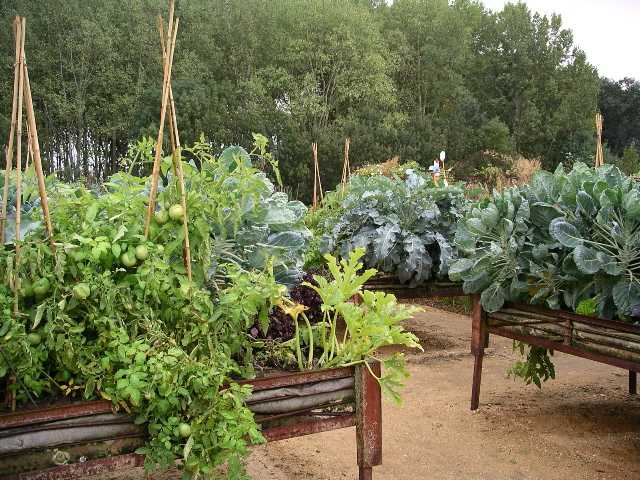
Les jardins sont divisés en petits espaces où on trouve des rivières, des fleurs, des légumes, ici poussant en surélévation...

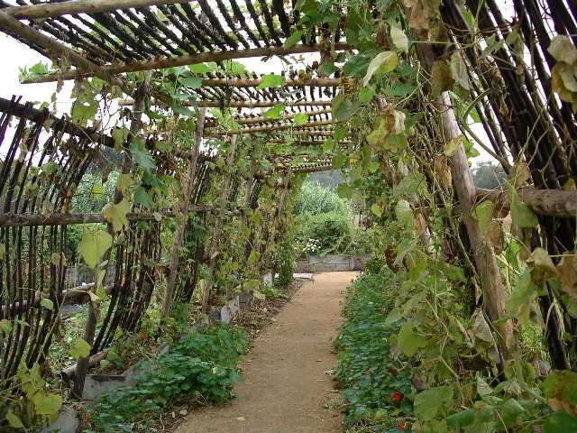
Les allées sont elles-mêmes des oeuvres d'art reprenant les thèmes des jardins : rames, plantes grimpantes...

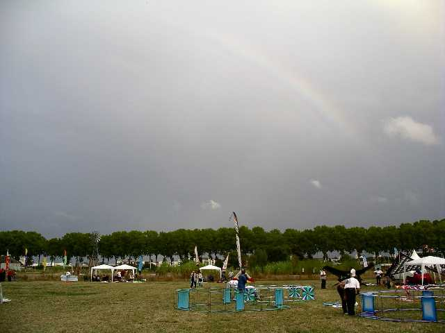
Mais l'arc-en-ciel est sous le vent donc 1) la pluie est passée, 2) le soleil est présent à nouveau !

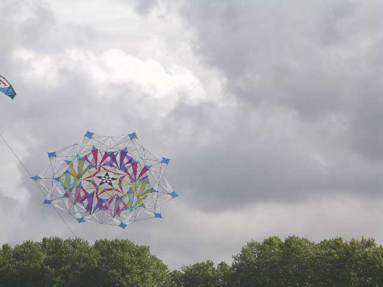
Et le vent se lève pas mal, le Diadème commence même à voler, et il lui en faut !

Il y a plusieurs ateliers de construction comme "L'arbre Voyageur" ou celui-ci pour cervolistes avertis qui permet de construire rien qu'avec des feuilles de bambou.

On peut même faire voler une seule feuille de bambou, mais l'avant de celle-ci a un peu souffert de la pluie !

Mais le vent monte doucement, on sort les bols !

Les roues commencent même à se lever, ce sera un festival de roues entre Hugo et Claude !

Les roues continuent à se bâtir fébrilement, les 100000 baguettes s'enfoncent dans les petits raccords, bilan 5 roues dont une un peu plus petite.

Et attention, au top ça va décoller. Mais non, c'est pas un combat, celui des rokkakus a d'ailleurs déjà eu lieu. Pourtant il y aura des accrochages et un peu de petit bois...

On voit aussi (heureusement) des cerfs-volants inconnus comme cette structure rappelant les double-squares de Michel, mais agencés différemment.

Il y a aussi cette famille (italienne, je crois) de cerfs-volants style Jang-Yang. En fait il y en a 3 de 3 couleurs différentes.

Coté Vierzon, il y a ce tri-triangle de Bernard, peut-être ?

On peut aussi admirer ce "delta inversé" dont j'ignore complètement l'auteur.

Pour les nounours volants, ceux-là ne sont pas mal !

Question nounours, en voilà une belle brochette, pas vraiment un train puisqu'ils sont sous un porteur, mais quand même !

Le train de Gressier à large maille, mais l'ensemble n'est quand même pas mal !

Enfin un vrai train, qui se cherche un peu dans le vent pas trop fort, provoquant des courbures intéressantes !

Dimanche midi, repas de gala prévu ! Mais d'abord, un petit pot entre amis, de toutes façons il y a de la queue

Bon, la queue n'est plus trop longue, on va pouvoir y aller pour le repas italien : Melon au jambon de Parme, Osso-Bucco avec raviolis, fromages, tiramissu !

Un sled, banal me direz-vous ! Oui, mais celui-ci vole bien et il fait... 5 cm de long !

Un beau kimono, dans une déco plutôt occidentale !

Un cerf-volant original, ressemblant au Marconi, mais ce n'en est pas du tout un ! L'avant est en 2 parties de toile et il n'y a pas de quille. Son propriétaire l'apprécie pour sa forme "en bouche ouverte"...

Les italiens ont amené leur soucoupe qui se pose, la porte s'ouvre...

...et le martien en sort, qui fait visiter la soucoupe aux enfants ! (il y a un truc, oui...).

Côté aérophotographie, Christophe a bien volé avec son delta début de siècle qui en a vu d'autres...

Christian a utilisé son wacot ou WAssèges modifié béCOT, excellent par vents pas trop forts...

Sa nacelle est bien stabilisée et amortie et reconnaissable grâce à ces petits ailerons triangulaires...

Olivier Reymond était présent avec ses cerfs-volants décorés d'images extraites de BD... Mais ce que je préfère, c'est cette bannière, toute en appliqué, même la signature !

Un papillon de Didier, gréé en statique avec des queues, mais on en verra d'autres pilotés dans tous les sens...

Du coté des Grands cerfs-volants, l'immense champ qui leur était réservé n'a pas été très meublé, sinon avec des cerfs-volants habituels comme cette pieuvre...

Dom a tenu boutique et faisait voler et essayer ses créations comme ce Pipa brésilien.

Mme Gosselin faisait voler des têtes de zèbre intéressants par le jeu de leur rayures !

Patrick avait intégré à ses filets les poissons d'art et de verre de son anniversaire à Berck !

Un peu de poésie pour finir, le Petit Prince, sur un Rokkaku très délicat...

Mais le soleil se couche sur l'immense terrain, LES immenses terrains de la Plaine de la Gloriette, et sur un festival heureux que les cervolistes comme le public apprécient...

Mais avant de prendre la route du retour, les camping-caristes et assimilés dînent une dernière fois ensemble...